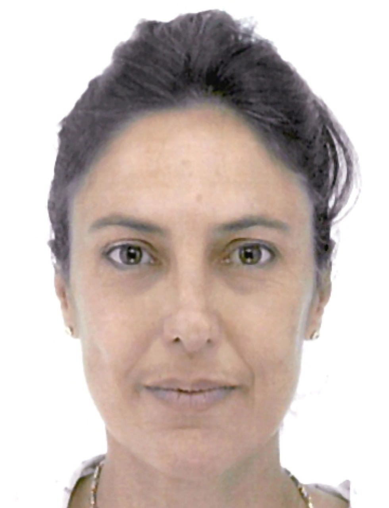
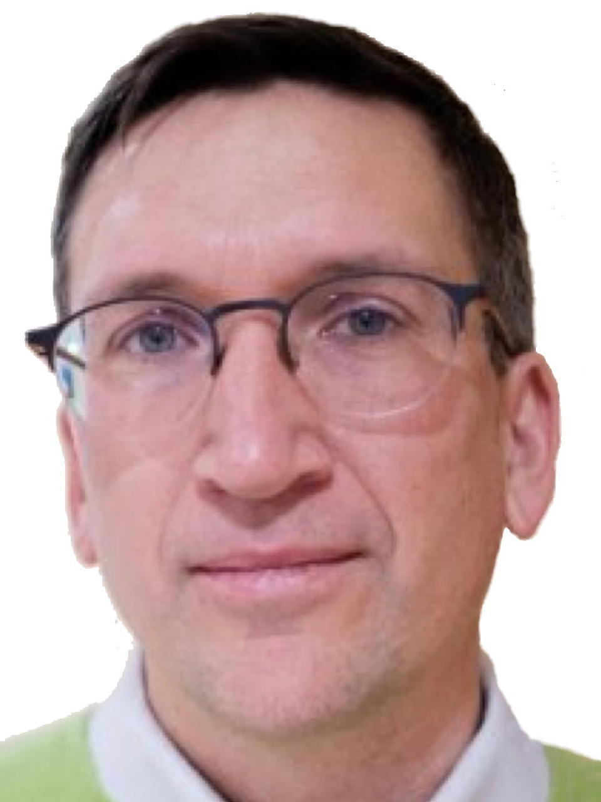
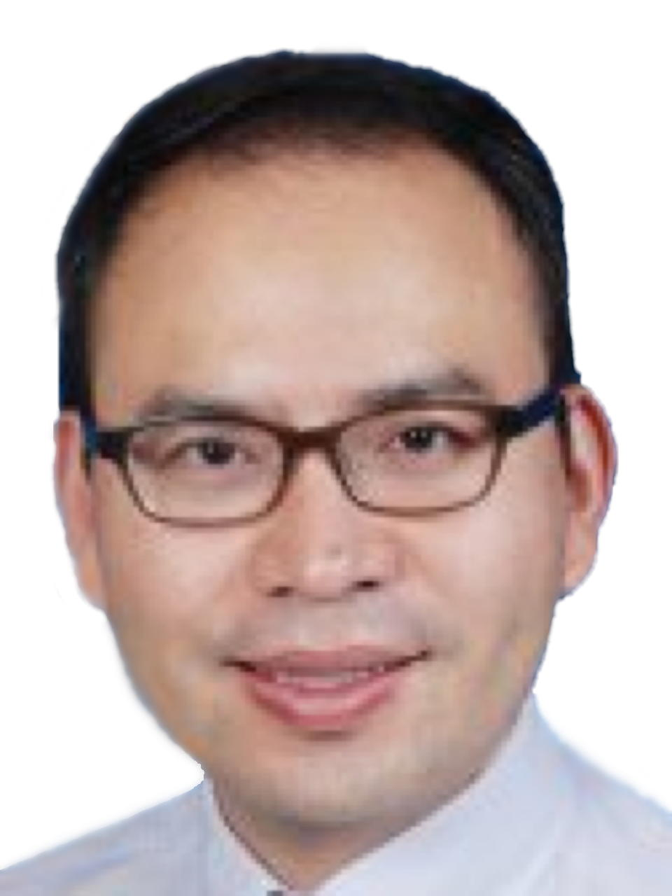
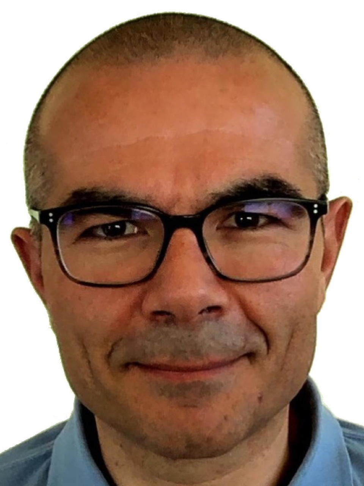

The 1st ISCSP&AM was held in Xi'an, China from October 9 to 12, 2019. The 2nd ISCSP&AM also took place in Xi'an, China from August 3 to 4, 2023.
Organizers
|
 Giuliana Materzanini (UCLouvain) |
 Matthieu Verstraete (UUtrecht - ULiège) |
 Junjie Wang (Northwestern Polytechnical University) |
 Gian-Marco Rignanese (UCLouvain) |
Sponsors
-
Université catholique de Louvain
Louvain-la-Neuve, Belgium -
Fund for Scientific Research (F.R.S.-FNRS)
Brussels, Belgium -
International Center for Materials Discovery
State Key Laboratory for Solidification Processing
Northwestern Polytechnical University, Xi’an, China
Contacts
- Gian-Marco Rignanese
- Vinciane Gandibleux